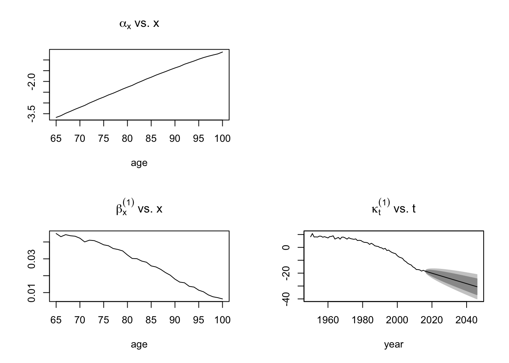
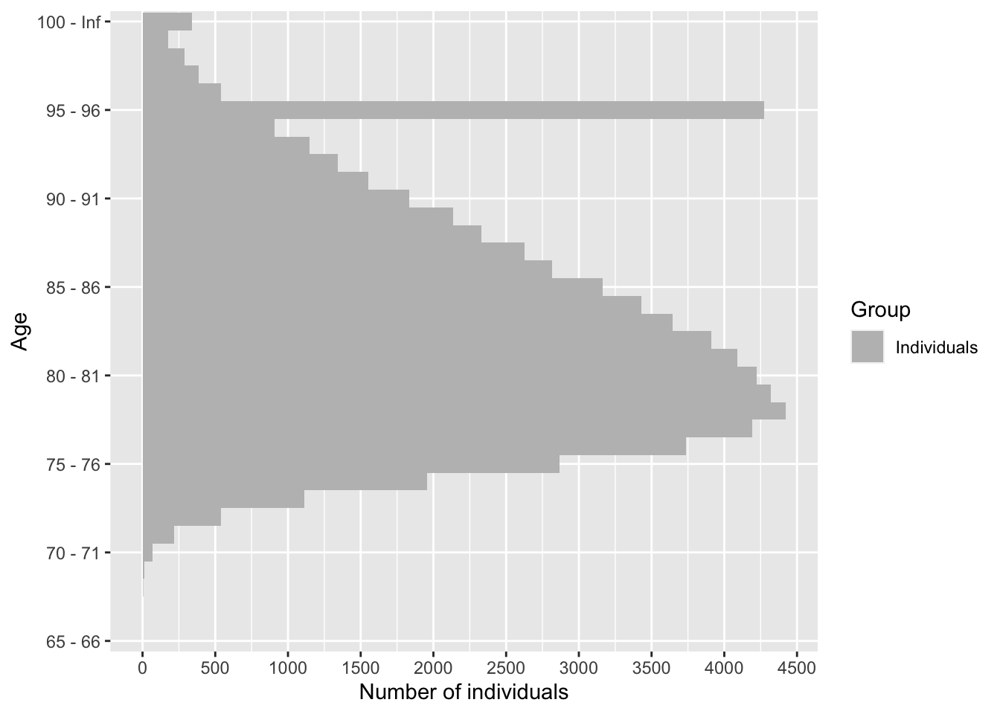

vignettes/IBMPopSim_insurance_portfolio.Rmd
IBMPopSim_insurance_portfolio.RmdThis vignette provides an example of usage of the package IBMPopSim, for simulating an heterogeneous life insurance portfolio.
We consider a insurance portfolio composed of males in two risk classes (for instance smokers vs non smokers), and where policyholders are characterized by their age and risk class.
Entries and exit to/from the portfolio are modeled by Poissonian events, and individual can die with an intensity depending on their age and risk class.
We start with an initial population of 30 000 males of age 65, distributed uniformly in each risk class.
pop_df <- data.frame("birth"=rep(-65,3e4),"death"=rep(NA,3e4),"risk_cls"= rep(1:2,each= 15000))
Death intensities are calibrated on England and Wales males mortality data (source: Human Mortality Database), forecasted over t=30 years by a Lee-Carter model with the package StMoMo.
Individuals in the risk class 1 are assumed to have mortality rates 20% higher that the forecasted mortality rates and individuals in the risk class 2 are assumed to have mortality rates 10% lower than the forecasted rates.
EWStMoMoMale <- StMoMoData(EWdata_hmd, series = "male") #Fitting LC <- lc() ages.fit <- 0:100 years.fit <- 1950:2016 LCfitMale <- fit(LC, data = EWStMoMoMale, ages.fit = ages.fit, years.fit = years.fit) ## StMoMo: Start fitting with gnm ## Initialising ## Running start-up iterations.. ## Running main iterations......... ## Done ## StMoMo: Finish fitting with gnm
t <- 30
LCforecastMale <- forecast(LCfitMale, h = t) plot(LCforecastMale)

list_death_male <- apply(LCforecastMale$rates, 2, function(x) stepfun(1:100, x)) breaks <- c(1:29) death_male <- piecewise_xy(breaks,list_death_male) death_female <- piecewise_xy(breaks,list_death_female)
death_male(5,60) # temps en premier age en deuxième ## [1] 0.006457236
The vector parameter alpha will be transformed into a C++ vector (with index starting at 0) during the model creation, and death_male into a C++ function.
death_event <- mk_event_individual( type = "death", intensity_code = "result = alpha[I.risk_cls -1]*death_male(t,age(I, t));" )
New policyholders enter the population at a constant rate \(\lambda\) (on average, \(\lambda\) individuals enter the portfolio each year). A new individual entering the population is in risk class 1 with probability \(p=0.4\) and his age is determined by a normally distributed random variable of mean 75 and variance 4.
entry_event <- mk_event_poisson( type = "entry", intensity = "lambda", kernel_code = "if (CUnif()<0.4) newI.risk_cls =1; else newI.risk_cls= 2; double a = CNorm(75,2); newI.set_age(a,t);" )
Policyholder can also exit the portofolio at a constant rate \(\mu\) (on average, \(\mu\) individuals enter the portfolio each year). In the presence of events of type exit in the population, a characteristic named out is automatically added, set to FALSE by default.
When an individual leave the population, his characteristics outis set to TRUE and the date at which he exited the population is recorded in the column death.
exit_event <- mk_event_poisson( type = "exit", intensity = "mu" )
model <- mk_model( characteristics = get_characteristics(pop_df),# Characteristics names ant type events = list(death_event,entry_event, exit_event), # Events list parameters = params # Model parameters ) ## [1] "exit event: add 'out' as individual attributes" summary(model) ## Events: ## #1: individual event of type death ## #2: poisson event of type entry ## #3: poisson event of type exit ## --------------------------------------- ## Individual description: ## names: birth death risk_cls out ## R types: double double integer logical ## C types: double double int bool ## --------------------------------------- ## R parameters available in C++ code: ## names: death_male alpha lambda mu ## R types: closure vector double double ## C types: function_xy arma::vec double double
(needed for acceptance/rejection algorithm)
For events with Poisson (constant) intensity, the bound is simply the intensity.
sim_out <- popsim(model = model, population =pop_df, events_bounds = c('death' = death_max, "entry"=params$lambda, "exit"=params$mu), parameters = params, time = t, age_max = 110, multithreading = TRUE) ## Warning in popsim(model = model, population = pop_df, events_bounds = c(death = ## death_max, : Add 'out' attributes to the population. ## Simulation on [0, 30]
Ratio of accepted events
sim_out$logs[["effective_events"]] / sim_out$logs[["proposed_events"]] ## [1] 0.2450621
sim_out$population is a data frame composed of all individuals present in the portfolio over the period [0,t] (individuals in the initial population and who entered the portofolio). Each line corresponds to an individual, with his date of birth, date of death (NA if still alive at the end of the simulation), risk class, and the characteristic out.
The characteristics out is set to TRUE for individuals who left the portfolio due to an exit event.
str(sim_out$population) ## 'data.frame': 179987 obs. of 4 variables: ## $ birth : num -65 -65 -65 -65 -65 -65 -65 -65 -65 -65 ... ## $ death : num NA NA NA NA NA NA NA NA NA NA ... ## $ risk_cls: int 1 1 1 1 1 1 1 1 1 1 ... ## $ out : logi FALSE FALSE FALSE FALSE FALSE FALSE ...
The function age_pyramidcomputes the age pyramid of a population data frame at a given time.
problème avec age breaks dans plot_pyramid il faut mettre les indices mais peut etre que ce n’est pas clair dans la doc, tu preferes qu’on mettes les ages ?
pyr = age_pyramid(sim_out$population, time = 30, ages=c(65:100,Inf)) plot_pyramid(pyr, age_breaks = as.integer(seq(1,36,by=5))) #seq(65,100,5)))

The initial population and model parameters can be modified without have to recompile the model, in order to simulate the population model with different input. The event bounds must be modified accordingly before running again the simulation.
See vignette human pop for several examples.
The number of death for given age groups, time periods and for each cause of death can be computed with death_table.
# For each cause: number of death from males of age between [70,90] (single year of age groups) over the 5-year period [15,20] #Dx_1 <- death_table(subset(sim_out_CoD$population, CoD==1 & male==T),ages = 70:90, times = c(15,20)) #Dx_2 <- death_table(subset(sim_out_CoD$population, CoD==2 & male==T),ages = 70:90, times = c(15,20))
Ex <- exposure_table(subset(sim_out_CoD$population, male==T),ages = 70:90, times = c(15,20)) # Central exposure to risk mx_1 <- Dx_1/Ex # Males central death rates by for Cause 1 mx_2 <- Dx_2/Ex